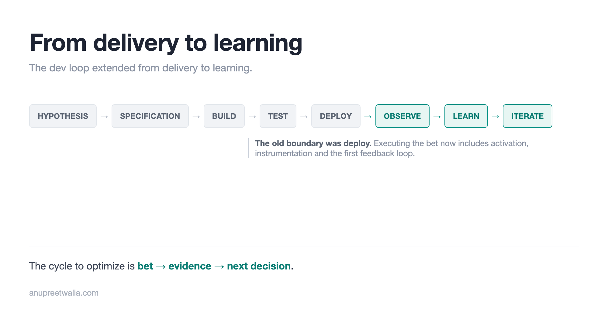

[WIP] From Delivery to Learning
If engineering can implement a feature 3x faster but it takes the same time to learn whether customers want it, we haven't captured the gain. Why the dev loop needs to extend from delivery to learning.

If engineering can implement a feature 3x faster, but it still takes us the same amount of time to learn whether customers want it, have we captured the productivity gain we expected from AI?
As engineering leaders, we spend a lot of time optimizing the dev loop - how quickly we can build, test and deploy. This loop is largely optimized around getting a feature into production. There is a lot of iteration inside that process, but "deployed successfully" is still a reasonable boundary for where engineering work on a feature ends.
AI is making parts of that loop faster, particularly planning and implementation. Based on the old metrics, engineering output or throughput should be multiples of what it was - 3x today, with 10x as the promise. But the outcomes don't seem to have moved the same way.
When this loop became faster, the bottleneck moved to choosing what gets built, and we call it "taste" or judgement.
If we look back, when we were shipping CDs and the cost of bugs was high, we used to have a separate QA stage. As we moved to CI/CD, the cost of shipping and fixing bugs became lower and we shifted QA left. The same argument can be made now for product taste or judgement. If we want to benefit from AI, we need to move this left, i.e. make it part of the dev loop.
That means extending the development loop from delivery to learning.
Roadmaps are bets
In order to move part of product validation to the dev loop, we need to get crisp about why and how we choose what to build, which is historically represented as the roadmap. A product roadmap is a list of bets, and each bet carries one class that says why it is on the list. The class is not a description of the work but the reason we are doing the work now.
To glance at the roadmap and know what we are investing in, some form of classification is needed. For this exercise, let's use these: Floor (keep the lights on), Moat (get harder to copy), Gate (open a closed door), Growth (turn arrivals into users), Monetize (turn usage into revenue), and Enabler (unlock what we ship next).
| Class | What the bet is for |
|---|---|
| Floor | Keep the lights on. Oncall, dependency upgrades, capacity, forced migrations, the bug backlog. |
| Moat | Make us harder to copy over time. Includes community and ecosystem work, since what other people build on top of us is the part that compounds. |
| Gate | Open a specific door that is closed today. A named customer, market, partner, or compliance requirement. |
| Growth | Move people from arriving to actually using the surface that will eventually be paid for. |
| Monetize | Convert usage that already exists into revenue. |
| Enabler | Unlock an internal capability we do not have yet, where the value is in what it lets us ship next. |
The class gives us the why. The bet still needs a hypothesis that says why now and what a good outcome looks like. Product owns choosing what bets we make (this rigor ain't changing) and why now. EPD (Engineering, Product, and Design) owns executing the bet until the bet plays out.
As a running example, take a Gate bet: a capability that five named customers need before they can adopt the product.
Expanding the dev loop
The dev loop today looks roughly like:
Hypothesis → specification → build → test → deploy
There is already iteration inside this loop. Requirements change, designs change, engineers find constraints, and EPD makes decisions together.
The boundary is still deployment.
For that Gate bet, deployment tells us the capability exists and works. It doesn't tell us whether the customers activated it, whether they could use it, or whether something in the product prevented them from getting the value we expected.
Those questions are often handled after the feature ships. We look at usage, collect customer feedback, decide what needs to change, prioritize the follow-up and bring another piece of work into the dev loop.
AI makes the build part of that cycle cheaper. Leaving the rest of the cycle unchanged limits the gain to producing the first version faster.
The larger loop is:
Hypothesis → specification → build → test → deploy → observe → learn → iterate
Activation, instrumentation, product acceptance and the first feedback loop become part of executing the bet.
The engineering specification now contains the expected outcome alongside the feature requirements. For the Gate bet built for five customers, we know before implementation how those customers will get access, what we need to observe and what evidence tells us whether the gate actually opened.
This is the same shift-left pattern we have used before. When QA was a separate stage, the engineering loop ended before quality was established. CI/CD made iteration cheaper and testing moved into the dev loop. AI makes implementation cheaper, and product acceptance and learning can move into the loop as well. AI helps on this side too - instrumenting the feature, synthesizing feedback, and analyzing usage are getting cheaper alongside implementation.
Product still owns what bets we make and why now. Moving product acceptance left doesn't move product strategy to Engineering. It expands what EPD owns when executing the bet.
A delivered feature is not a resolved bet
Take the same Gate bet. We build the capability, ship it in two months and it works correctly. If none of the five customers use it, the bet failed but the feature was delivered.
That result can still represent a healthy loop if we get the answer quickly enough to act on it. The loop ends when the bet has played out far enough to know what to do next. Success can mean adoption. It can also mean learning quickly that the hypothesis was wrong and stopping the investment.
If implementation gets 10x faster but the time from making a bet to getting enough evidence to make the next decision stays the same, only one part of the loop got faster.
The cycle to optimize is bet → evidence → next decision.